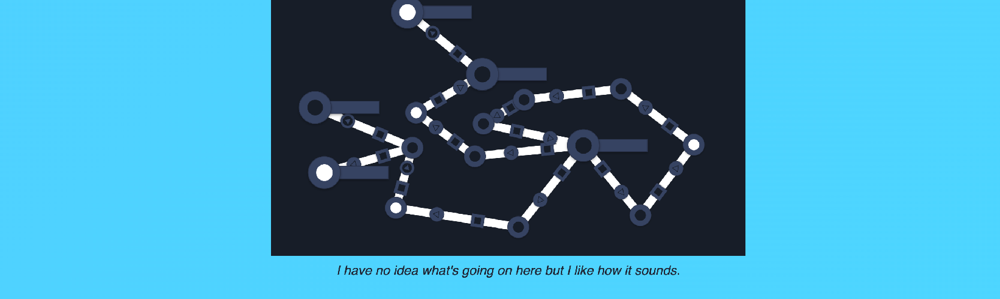
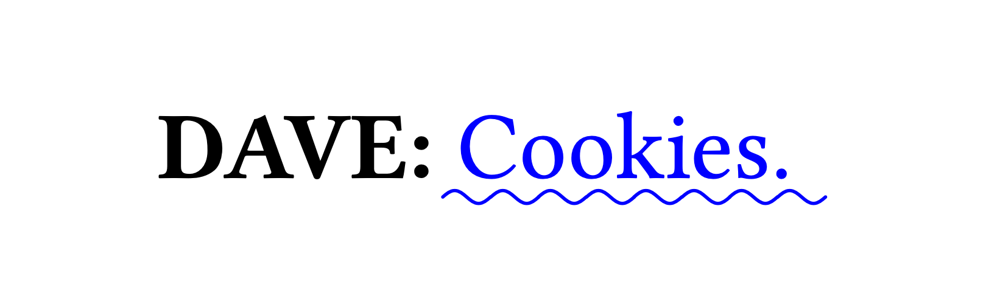
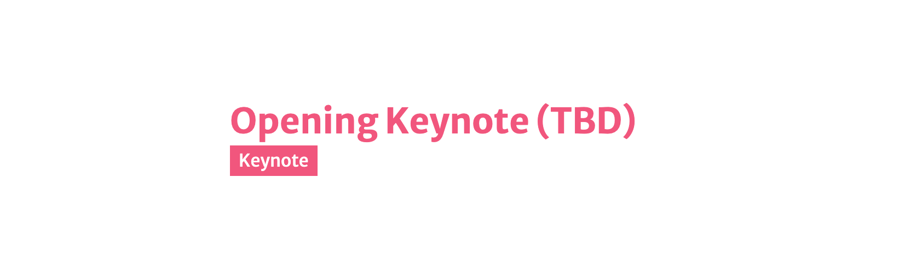

The weekly TODEPOND PONDCAST is for paying supporters only.
Please only listen / read if you've
paid
:)
It's here again. It's time for another weekly episode of the...
🐸 TODEPOND PONDCAST 🐸
I've been way too busy.
Ok so I wrote this pondcast ages ago, and then I got very ill, so this is very very late. Sorry about that.
What's new this week?
I finally wrote my (first) write up of Arroost. I've done various artistic presentations of Arroost before, but this is the first time I've presented it in a more serious, academish way.
Let's do a little inventory of what we've got so far.
I submitted my researchy essay to LIVE at SPLASH, where I spoke last year. It's also the same conference that me and Dave Ackley submitted our essay to (more on that later).
I'm sure there are loads of amazing submissions to LIVE this year, so I won't be too disheartened if I get rejected, but I do hope to do a more researchy talk about it at some point. It's really important to me to present my work in a variety of ways like this. I think it's important for any piece of work to be positioned and placed like this.
Dave and I finished our essay!!!!! (for the second time)
We already wrote an essay for Onward Essays a while back, and it got conditionally accepted a while back, which meant we had to improve it.
We finished that this week! We had a load more chats and then wrote it all up.
I think one of the most important changes was moving a section that was previously near the end. It's right at the start now. The section addresses a specific point that various readers took issue with, so I think it needed to appear quite early on. I think it does fit better into that part of the essay too.
Writing this essay was a lot of work, and it really exhausted me, but I'm really pleased that we wrote it. I learned so much from the process and my understanding of code and stuff grew and changed dramatically throughout the process. It has already started to impact the rest of my work in a positive way.
I got asked to come and do the opening keynote talk at the Heart of Clojure conference, and so of course I said yes! I did double check with them that it's ok that I don't really do clojure (which is a programming language if you didn't know). And they said they knew that, and that's ok. And in actual fact, I looked at the talks from the previous conference, and while many of the talks were clojure-related, many were not, including the previous opening keynote.
I mean, this is a really special moment for me. It's just one instance, but to me it represents hitting a certain point of recognition and/or success, that I only ever dreamed of, and I never really thought I could get to.
As time goes on, I'm getting invited onto more and more podcasts and out to more and more events all over the place. I mean, I'm writing this Pondcast on the plane right now!! I'm heading to New York because I was asked to come and do an opening keynote demo for my work at tldraw. And last week I did a talk somewhere else. And I spoke about lots of TodePond stuff on a podcast recently. And I'm maybe maybe maybe going around Australia in winter (summer) to do a round of talks. What is going on??!!? It's sometimes getting a little bit overwhelming, but I am trying to enjoy it.
For Heart of Clojure, I spoke with Arne (who organises the thing) about what kinds of topics I could talk about. Normally I center my talks around a specific project, but this one might be different. We'll see. I'm going to continue working on it.
And of course, I thank you immensely for making all of this possible. This wouldn't be possible without all of your support, so thank you for being here. Of course, wherever you are in the world, whatever you're doing, I hope you have a great week. 🐸
Days since tode fell asleep: 575Back to the pondcast.